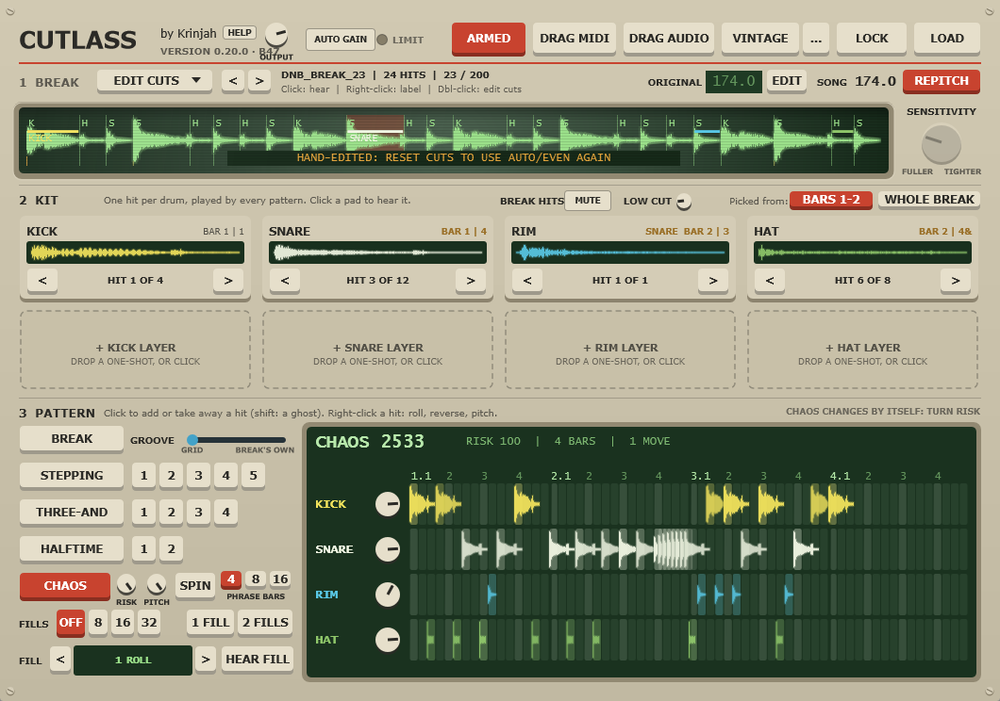
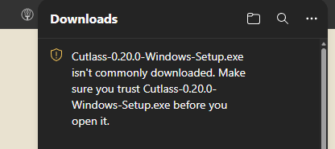
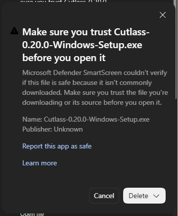

Cutlass beta
Drop in a break. Cutlass chops it, picks a kit, and plays it like a jungle drummer, with fills, layers, CHAOS and drag-out to MIDI or audio.
Latest: 0.20.0 · Mac + Windows · VST3 / AU / Standalone
Both downloads come straight from GitHub, where the files are kept: see the release page.
Only download Cutlass from this page. I'll never send it any other way. If you got it somewhere else, delete it.
See it in action
Can't see the video? Watch it on YouTube.

Before you install
- It's a beta. Save your projects, and bounce anything you love to audio.
- No internet, no data. Cutlass never goes online and collects nothing.
- The deal: the beta is free. Cutlass 1.0 will be paid, and everyone who sends feedback during the beta gets 1.0 free.
Install on Windows
- Close your music program.
- Double-click
Cutlass-…-Windows-Setup.exeand click Next until it finishes. - Open your music program. If Cutlass doesn't show up, rescan plugins (Ableton: Preferences → Plug-ins → Rescan).
Windows will ask "are you sure?" a few times
That's expected, and it's safe to continue. Windows and your browser double-check any new app that not many people have downloaded yet. It doesn't mean anything is wrong with the file. Expect three or four quick "are you sure?" steps:
- Your browser says the file "isn't commonly downloaded". In Edge, hover over the download, click the … and choose Keep. In Chrome, click Keep.

- Edge asks you to "Make sure you trust" it. Click the small arrow next to Delete, then Keep anyway.

- A blue "Windows protected your PC" box when you open the installer: click More info, then Run anyway.
- "Do you want to allow this app to make changes?" Click Yes. The installer needs this to put the plugin in your VST3 folder.
Why the warnings, honestly
Apps are "signed" to prove who made them. The Mac version is already signed and approved by Apple. Windows signing takes an ID check and time, so the beta isn't signed yet. Signed Windows builds are coming with the full release.
If you run the Windows installer through a virus scanner, here's what to expect. I checked this exact file with VirusTotal, a free site that checks a file with about 70 antivirus programs: Microsoft Defender (built into Windows), Bitdefender, Avast, AVG, McAfee and the other big names find nothing. Two small scanners out of 71 call it "obfuscated", because the installer is compressed and brand new. That's a common false alarm for new, unsigned installers, and it goes away with signing and time. See the full report.
Install on Mac
- Close your music program.
- Double-click
Cutlass-…-Mac.pkgand click Continue until it finishes. It asks for your Mac password, then installs the AU, the VST3 and the Cutlass app. - Open your music program. Logic and GarageBand find it under Audio Units → Krinjah.
Mac builds are signed and checked by Apple, so they open with no warning. The first time you use DRAG AUDIO or SAVE BUG REPORT, your Mac may ask whether your music program can use your Documents or Desktop folder. That's where Cutlass saves those files, so click OK.
Your first minute
- Put Cutlass on a MIDI (instrument) track.
- Drag a break onto the green screen. Any break you own works. The < > arrows step through its folder.
- Pick a pattern, press play in your music program.
- Turn on FILLS, or try CHAOS and its RISK knob.
- Drag out the result with DRAG MIDI or DRAG AUDIO.
Send me a note
My one ask: play around with Cutlass a little, then tell me how it went. No pressure.
The button opens an email to hello@krinjah.com (or write to that address yourself). Say Windows or Mac, which music program, what you loved, and what was confusing or broke.
If Cutlass crashed or sounded wrong, just tell me what you were doing when it happened. That's the most useful part.
Up for one extra step? In Cutlass, open the help (?) and press SAVE BUG REPORT. It makes a small folder with your break and your settings (file names only, never where they live on your computer): zip it and attach it to your email. I only use your break to find the bug, and delete it once it's fixed. I read everything once a week and post what changed below.
Known issues
- On some breaks a kick or snare gets cut in two. Try the SENSITIVITY knob or EDIT CUTS.
- On a few breaks the kit finds no hat or rim at low SENSITIVITY. Turn it up a little.
- Tested in Ableton. FL Studio, Logic, Cubase, Bitwig and others are new territory: tell me how it goes.
- CHAOS is brand new. Tell me which spins sound great and which don't.
- With an audio buffer of 512 or more, you may hear a tiny click where two slices join. Setting your music program's buffer to 256 avoids it until the fix lands.
What's next
First update: Wednesday, Nov 11, shaped by your notes. Each update gets a short "You said / I changed / Not yet, and why" right here.
Being worked on (no dates yet): layered breaks (a second break under the first), easier pattern editing, a CRASH pad, more patterns, and time-stretch. Tell me what you'd want next in your notes.
Thanks
Cutlass stands on 30 years of jungle: the drummers on the original breaks, and the producers and tool makers who've taught this craft for years. If Cutlass helps you, go learn from them too.
How it was made: I designed and tested it, Claude (an AI) helped write the code, and I'm responsible for it.
Uninstall
- Windows: Settings → Apps → "Cutlass" (publisher Krinjah) → Uninstall.
- Mac: drag these three to the Trash:
/Library/Audio/Plug-Ins/Components/Cutlass.component,/Library/Audio/Plug-Ins/VST3/Cutlass.vst3and/Applications/Cutlass.app.
Uninstalling never touches your saved projects. Tried an earlier test build on Mac by hand? Also delete the copies in your own ~/Library/Audio/Plug-Ins/ folders, so you don't get two Cutlasses.